How Claude built the same analytical database eight times, in parallel, without going over the subscription. And what that means for building business software.
| What was built | A complete analytical SQL database (SQL, storage format, HTTP server, parallel execution), built independently six times: Java, Clojure, Rust, Python, Go and Common Lisp. Then twice more in assembly language (x86-64 and ARM), plus hand-tuned assembly "kernels" for both chips. |
| How much code | About 198,000 lines, written by AI agents. |
| Correctness | Every engine passes 100 % of its conformance suite: 746 test cases, a share of them hidden from the agents. |
| Wall-clock time | Kick-off Saturday 13:46 → all six main engines through all five phases by Saturday 23:21 (under 10 hours) → everything, assembly included, done Monday morning → one more round on Monday evening fixed every defect the audits found. |
| Agent time | 85 hours of AI agent work in 116 recorded sessions. Up to 12 sessions ran at once. |
| Cost | $1,375 at API list prices. It actually ran on a Claude subscription: no overage, no rate-limit rejection, ever. |
| People | One owner giving direction. Two hands-on interventions in the whole project, both logged. |
Most "AI wrote my app" stories are one model building one thing once. We wanted something harder to fake. We wrote a specification for an analytical database, then asked Claude to build it from scratch, independently, in eight languages, and measured everything along the way:
The database is not a toy. It has a SQL dialect with joins, grouping, subqueries and aggregation, a binary column storage format, an HTTP server with concurrency control, timeouts and cancellation, and parallel and vectorized execution. It was built in five phases.
Up to 16 sessions were active in one 10-minute slot (12 at any single instant). The quiet stretches are review-and-merge time between waves. The long one on Sunday night is the project waiting for its next go-ahead, not anything stuck.
Saturday: the big build.
| time (US Eastern) | milestone |
|---|---|
| 13:46 | First commit: specification, test harness, orchestrator. |
| 15:22 | Assembly kernels pass natively on both x86-64 and ARM. |
| 16:15 | All six engines pass Phase 1 (protocol, catalog, CSV/JSON loading), hidden tests included. |
| 17:09 | Phase 2, the full SQL dialect. |
| 18:49 | Phase 3: storage format. Every engine reads every other engine's files (a 6 × 6 interoperability matrix). |
| 20:45 | Phase 4: HTTP server and concurrency. |
| 23:21 | Phase 5: parallel and vectorized execution, plus the first benchmark. All twenty benchmark queries give identical answers in all six engines. |
Sunday: changing the engines after they were built. Real software changes after it ships, so the agents also got the tasks that come after version 1:
UNION ALL;Meanwhile the two assembly-language engines started, as a separate stretch goal with its own budget cap.
Monday: assembly finishes, then the grown-up checks.
Monday evening: the fix-up round. The probes had confirmed real defects, and the engines had disagreed about gigantic SQL statements. So the spec got a new rule (change request CR-6), and all eight agents implemented it in one parallel round: 8 of 8 succeeded on the first try, in 35–106 minutes each, for $119 in total. Along the way they fixed every defect the audits had confirmed, including two the task didn't even ask for.

| group | sessions | agent hours | list-price cost |
|---|---|---|---|
| Six main engines (all phases and later tasks) | 84 | 66.7 | $953 |
| Assembly kernels (both chips) | 10 | 5.0 | $90 |
| Assembly engines (both chips) | 22 | 13.4 | $332 (cap: $600) |
| Total | 116 | 85.1 | $1,375 |

A complete, tested database engine, including five rounds of later changes, came to about $130–185 per language at list price. Even the "let's write a database in assembly, why not" stretch goal came in at about half its cap.
The costs above are for the agent sessions only. The orchestrating session's own usage is not included.
The $1,375 is what these sessions would have cost on the pay-per-token API. They actually ran on a Claude subscription, which has two rolling limits: a 5-hour window and a 7-day window. Twelve agents working at once can burn through a 5-hour window quickly. Our first wave of 8 agents used about 22 % of it in 35 minutes. So the orchestrator had guard rails:
How it played out:
In short: we let the work slow down rather than let the bill go up.

Correctness: 100 % everywhere. All eight engines pass their full conformance suite.

Speed: a wide spread, and that's the point of the experiment. On a 1-million-row workload (geometric mean over 20 queries):



Size.
Fast is nice. Trustworthy matters more. The safeguards:
Hidden tests. Part of every acceptance suite was withheld, so passing meant actually implementing the spec, not memorising the tests.
Clean-room rebuilds. Every submission was rebuilt from scratch in a sandbox before it counted.
Two independent AI code reviewers per engine. They agreed on 88–92 % of scores exactly.
Black-box probes for what the reviewers suspected. These found real defects, which we report rather than hide:
OR conditions crash both assembly
engines;The same probes cleared several suspected problems. And one more round of agent runs then fixed every confirmed defect; the same probes now pass on all eight engines.
Everything recorded. Every session's transcript, cost and outcome is kept, including the 7 that failed or timed out. A dashboard of all of it is published at https://pgdad.github.io/poly-query/.
Nothing here is specific to databases. The recipe carries over to business functionality such as a pricing engine, a billing service, a claims rule engine or a regulatory report:
The expensive part of software has always been knowing what to build. This approach puts people on that, and lets the agents grind through the how, around the clock.
Here's the idea we find most exciting for business use. When writing code is cheap, write critical logic twice, in two different languages, by two independent agents, from the same spec. Then run both on the same inputs and compare the answers.
This isn't hypothetical; it happened here:
Two practical notes:
docs/results/README.mdexperiments/runs/Charts are regenerated from the experiment data by
tools/reporting/story_assets.py.